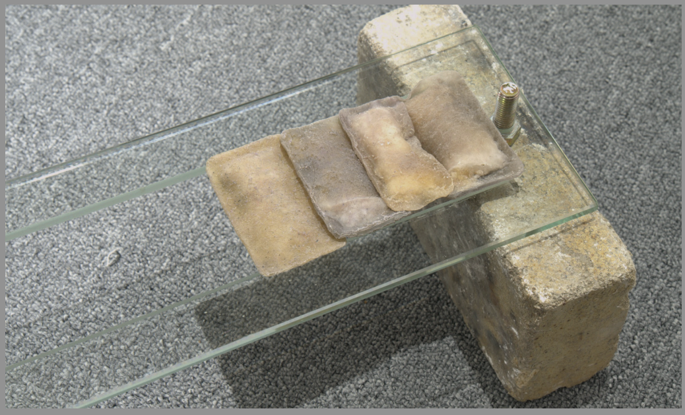

절이다 재우다 저미다, 무거운 것과 가벼운 것 (2022)
녹슨 철판, 나사, 유리, 라텍스, 쌀, 포장지, 벽돌, 시멘트, 석고
191×32×63cm
전시:
연약한 테블릿의 가벼움과 가벼운 감정의 절단날은 베란다의 재처럼 반동적 무기력을 지닌다 / 새들이 그림을 쪼아 가지는 않을테니까 / 표제의 전으로 이야기를 되돌립니다. 나에게 이상한 기억이 있습니다,
2022.7.16 - 7.29, 수치.
사진 © 김솔이
사진 © 엄선호